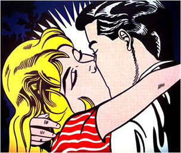

Pop artists produced works based on the popular images from 1950's culture. They poke fun at the seriousness with which some people regarded these commercial images and icons.
Warhol: "I wanted something stronger that gave more fo an assembly line effect. With silk screening you pick a photograph, blow it up, transfer it in glue onto silk, and then roll ink across it so the ink goes through the silk. That way you get the same image, slightly different each time."
Andy Warhol, Marilyn Monroe, 1967
His canvases were devoted to such familiar objects as targets, American flags. He painted these subjects with objectvity and precision, applying paint very thickly, so that the paintings became objects in themselves rather than reproductions of recognizable items. This idea of art-as-object became a potent influence on later sculpture as well as painting.
Johns: "I like to repeat an image in another medium to observe the play between the two: the image and the medium. In a sense, one does the same thing two ways and can observe differences and samenesses, the stress the image takes in different media."
Jasper Johns, Numbers in Colour, 1959
Use 6 elements and principles of art thoughout the critique based off of the following piece of work The Kiss II, 1962 by Roy Lichtenstein

Working with stencils, Lichtenstein developed a technique using rows of dots that mimicked the commercial printing patters using in the production of comic books. Lichtenstein sought an anonymous style, removing all personal reference from his work to convey the appearance of mass production.
Lichtenstein once said: "All my art is in some way about other art, even if the other art is cartoons.
Roy Lichtenstein, The Kiss II, 1962